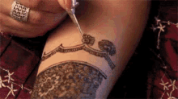

What Had Gotten Me into it...
I had discovered henna in elementry school when my mom took me to her friends house to get my henna done for Eid. It was my first time ever seeing henna and I had fell in love right away! However, I hadn't practiced henna in a while due to poor mental health. But recently, I had finally applied henna after so long! I had gotten a henna cone as a gift from a family friend who came back from a trip to Paksitan, which had inspired me to try henna again (wish I could show you a picture but it had washed out quickly because I interact with water a lot).
Three Things I liked about it...
1.) I liked the traditonal designs used in henna, the array of flowers, the tikka, leaves (the one I struggle with the most), and more! I just think it looks ornate, especially if you don't leave too much negative space!
2.) I liked applying it because it felt like I was decorating a cake or something, only it's someone's skin!
3.) And most of all, I like the finished product XD.
